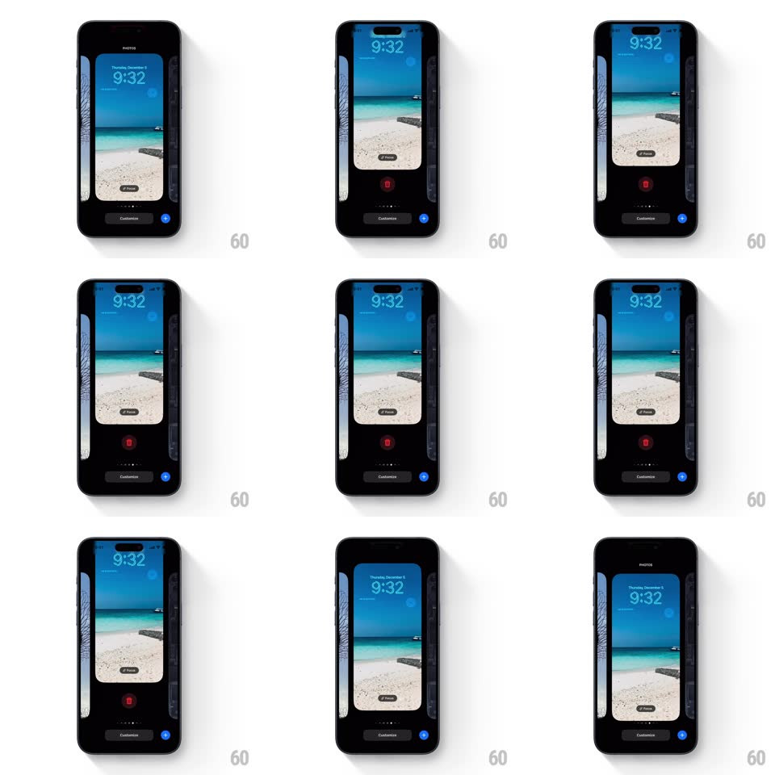

Media
Frame-by-frame

Rebuild this interaction 1:1: iOS wallpaper gallery swipe-to-delete - swiping up on the centered wallpaper card lifts it to reveal a red trash button underneath; the card springs back down if the swipe is released early.

Rebuild this interaction 1:1: iOS wallpaper gallery swipe-to-delete - swiping up on the centered wallpaper card lifts it to reveal a red trash button underneath; the card springs back down if the swipe is released early. ## Integration Integration: stack-agnostic spec - springs given as stiffness/damping, timed motions as duration + curve; map every value to your framework and animation library of choice. ## Scene iOS lock-screen wallpaper gallery on a black stage: the current wallpaper card (beach photo with 9:32 clock) centered, thin slivers of neighboring wallpapers at the left/right edges, page dots, a "Customize" button at the bottom. The red trash button hides behind the centered card until revealed. ## Motion spec Pattern: swipe-up card lift revealing a destructive action. - Vertical drag on the card translates it up 1:1 (slight rubber-band beyond ~120px, factor ~0.4). - As the card lifts, the red trash button is uncovered beneath it - the button itself does not move; the card masks it. - Release below the threshold (~100px): the card springs back down over the button (spring ~320/26, ~300ms, small overshoot). - Release past the threshold (or a tap on the revealed trash): the card holds raised and the delete confirmation begins (separate flow). - Neighboring wallpaper slivers, dots, and Customize stay static throughout. ## Calibration - The mask relationship is the trick: the button lives under the card, revealed by the card's travel - it never slides itself. - Rubber-banding starts only after the reveal distance, so the full button is always reachable 1:1. ## Reduced motion Tap-hold or button press toggles the raised state with a 200ms ease; no rubber-band. ## Don't miss - Only the centered card lifts - side wallpaper slivers stay put. - The trash button is circular, red, with a white trash glyph, centered under the card.